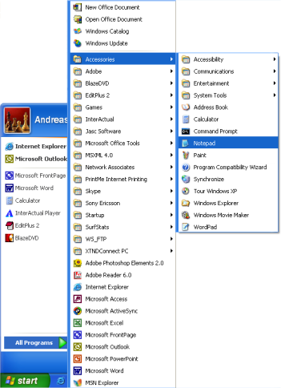

Lição 4: Criando seu primeiro website
Com o que você aprendeu nas lições anteriores está a alguns minutos de criar seu primeiro website.
Como?
Na lição 1 vimos o que é necessário para construir um website: um navegador e o Notepad (ou um editor de texto similar). Uma vez que você esta lendo esta página, provavelmente está com seu navegador aberto. Agora abra outra janela do seu navegador de modo que você tenha duas janelas na tela, uma para ler este tutorial e outra para visualizar o website que você vai construir.
Abra também o Notepad ( Iniciar » Programas » Acessórios):

Agora, estamos prontos para começar!
O que posso fazer?
Vamos começar com algo simples. Que tal uma página que diga: "Hurrah! Esta é a minha primeira página web." Continue e você verá como isto é simples de fazer.
HTML é simples e lógico. O navegador lê HTML de modo idêntico ao que você lê um texto qualquer, de cima para baixo e da esquerda para a direita. Assim um documento HTML inicia com aquilo que deve ser a primeira coisa aparecer na página e termina com a última coisa a aparecer.
A primeira coisa a fazer é dizer ao navegador que você vai "falar" com ele na linguagem HTML. Isto é feito com a tag <html> (nenhuma novidade nisto). Então, antes de mais nada digite "<html>" na primeira linha do documento, no Notepad.
Como sabemos das lições anteriores, <html> é uma tag de abertura e deve ser fechada com a tag de fechamento quando você acabar de digitar seu documento HTML. Para termos certeza que não iremos esquecer de fechar a tag HTML, faça isso agora mesmo, digitando "</html>" localizada a algumas linhas abaixo, assim você irá escrever seu documento entre as tags digitadas <html> e </html>.
A próxima coisa que o documento precisa é um "head" (cabeça), que fornece informações sobre o documento e um "body" (corpo), que abriga o conteúdo do documento. Como HTML não seria nada se não fosse lógico, a "cabeça" (<head> e </head>) fica em cima do "corpo" (<body> e </body>).
Seu documento agora está como mostrado abaixo:
<html>
<head>
</head>
<body>
</body>
</html>
Notar como estruturamos o código em linhas diferentes (usar a tecla Enter para pular para próxima linha) e também a indentação (recuos) do código (usar a tecla Tab para indentar). A príncipio não faz qualquer diferença a maneira como você estrutura (linhas e recuos na digitação) seu documento HTML. Mas um código bem estruturado é mais fácil de ler e entender, é altamente recomendado que você adote uma estrutura clara e nítida para seu HTML, usando linhas e indentação (recuos), como mostrado no exemplo acima.
Se o seu documento está como o mostrado acima, você construiu sua primeira página web - uma página particularmente chata e provalvelmente nada parecido com o que você sonhou fazer quando começou a ler este tutorial, mas de qualquer forma um tipo de website. Isto que você fez será um template base para seus futuros documentos HTML.
Até aqui tudo bem, mas como colocar conteúdo no meu website?
Como você já aprendeu, seu documento HTML é composto de duas partes: um head e um body. Na seção head você escreve informações sobre a página e na seção body você coloca as informações que constituem a página.
Por exemplo, para dar um título ao documento, título este que apareça no topo da barra do navegador você deverá usar a seção"head". A tag para acresentar um título é <title>:
<title>Minha primeira página web</title>
Notar que o título não aparece na página propriamente dita. Tudo que você quer que apareça na página é conteúdo e deverá ser colocado entre as tags "body".
Conforme combinamos, queremos uma página dizendo, "Hurrah! Esta é a minha primeira página web." Este é o texto que queremos comunicar e ele deverá ser colocado na seção body. Então digite na seção body o seguinte:
<p>Hurrah! Esta é a minha primeira página web.</p>
A letra p na tag <p> é a abreviatura para "paragraph" (parágrafo) que é exatamente o que o texto é - um texto parágrafo.
Seu documento HTML agora está como mostrado a seguir:
<html>
<head>
<title>Minha primeira página web</title>
</head>
<body>
<p>Hurrah! Esta é a minha primeira página web.</p>
</body>
</html>
Pronto! Você acaba de construir seu primeiro website!
Agora basta que você salve seu trabalho no HD e depois visualize no navegador:
- No Notepad vá ao menu "Arquivo" no topo da janela e escolha a opção "Salvar como...".
- Escolha "Todos os arquivos" no box "Salvar como tipo". Isto é muito importante - caso você não faça isto, o arquivo será salvo como texto e não como documento HTML.
- Salve seu documento com o nome "page1.htm" (a extensão ".htm" indica que se trata de um documento HTML. A extensão ".html" dá o mesmo resultado. Eu sempre uso ".htm", mas você pode escolher a que você preferir .htm ou .html). Você pode salvar o documento onde você quiser no seu HD - esteja certo de salvar em um lugar que depois você possa achar com facilidade.
Agora vá ao seu navegador:
- No menu existente no topo do navegador vá em "Arquivo" e escolha a opção "Abrir" (CTRL+O).
- Clique em "Procurar" no box que aparece.
- Localize o seu documento HTML e clique em "Abrir".
Você deverá ver no seu navegador: "Hurrah! Esta é a minha primeira página web." Parabéns!
Se você quer que o mundo todo veja sua página, vá direto para a Lição 14 e aprenda como fazer upload da sua página para a Internet. Se não, tenha paciência e continue lendo. A brincadeira apenas começou.